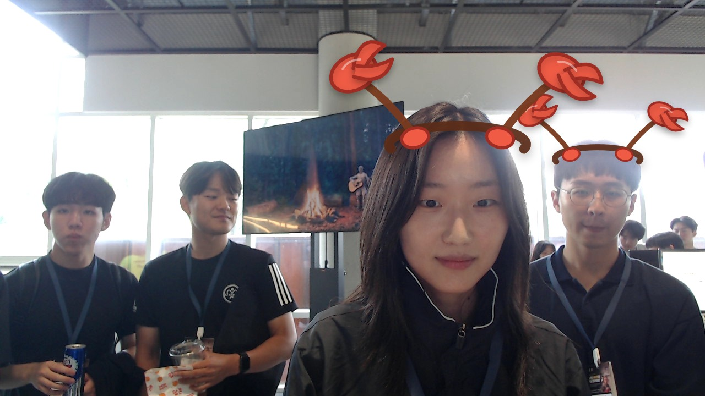

YEONWOO SO
Graduate School student
MOTTOHAPPY LIFE
YEONWOO SO | SNU 대학원생의 기록
About me
SNU STUDENT
What I do
AI-written bio
SNU에서 공부하는 대학원생 YEONWOO SO입니다. 학업과 관심사를 GitHub 스타일 블로그에 정리하며 행복한 삶을 지향합니다.
AI first impression
차분한 표정과 편안한 자세로, 학업과 일상을 자연스럽게 공유하는 개인 블로그 분위기가 느껴집니다.